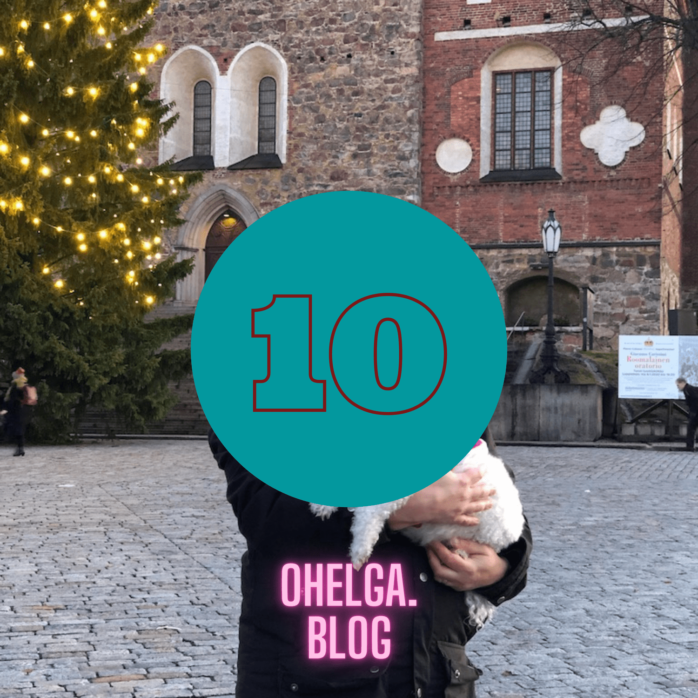

Johanna hittar en ny favorit i denna rispappersrulle. Puumajassa asuva artisti hurmaa, mutta tepsiikö Tomppaan?Linkit kappaleeseen: Apple Music: Karita Mattila - Cantique de Noel, "Oi jouluyö" Spotify: Karita Mattila - Cantique de Noel, "Oi jouluyö"
Johanna hittar en ny favorit i denna rispappersrulle. Puumajassa asuva artisti hurmaa, mutta tepsiikö Tomppaan?
Linkit kappaleeseen
Apple Music:
Spotify:

Kommentit / Kommentarer (2)
<p>Mycket vibrato idag också men hon tog inte i på slutet. Kan det bero på att hon inte klarade en hel oktav högre. Men skulle hon uppträda vid byacentret nu vid julfesten så kulle jag nog maka mig dit. Anita säger att hon inte skulle komma i rädsla för att få migrän. </p>
<p>Jättefin. Så mycket känsla och själ. Min favorit hittills tror jag. Trots att hon inte tog tonen som Mattila.</p>